CRM
HubSpot's most-trafficked page. Filtering is how customers find the right records.
Sales reps, CRM admins
Case study · HubSpot
How I led a platform initiative to turn a fragmented filter experience into a shared model.
Filtering is how HubSpot customers find their data and ask questions about it. It sits at the center of four pillar products, yet it was a top 3 CSAT complaint in all four. Each product had its own filter, with different capabilities and different UI.
When engineering bet on one unified query platform, I set the direction for the front end: one shared filter model that's intuitive for simple questions, capable of complex ones, and consistent across HubSpot. It launched in private beta in October 2026, and Segments and Workflows have committed to migrate.
HubSpot is a go-to-market platform that brings marketing, sales, customer service and operations into one system, built on a shared customer database. People come to HubSpot to find their data and ask questions about it. Filtering is how they do it.
HubSpot's most-trafficked page. Filtering is how customers find the right records.
Sales reps, CRM admins
Building a segment is filtering CRM records.
Marketers
Filters define every trigger and branch in an automation.
RevOps, CRM admins, marketers
Every report starts by narrowing the data to what matters.
CRM admins, marketers, RevOps
Yet filtering was a top 3 CSAT complaint in all four products. Customers told us the same thing in different words.
“HubSpot's data segmentation feels ‘option-divey,’ where the abundance of options and inconsistent interfaces can be overwhelming. The segmentation tools often present multiple ways to achieve similar outcomes, such as using lists, workflows, or filters, without a clear and unified approach, creating confusion.”
Marketing operations manager
“Using the same filters as I do to view Contacts, I get very different results when I put together a list. Very confusing and not an effective use of time.”
Marketing ops lead
Engineering made a big bet: one unified query platform to replace the separate query backends behind each product. With every product about to query data the same way, design had a huge opportunity to unify the front end too.
Existing query backends
CRM SearchSales ViewsILSSnowflakeReplaced by
Filter surfaces
CRM indexSegmentsWorkflowsReporting…For customers
For the platform
We agreed on how we'd measure success before launch, from the first weeks to the long term.
Time to create a segment, measured by a randomized A/B test.
In-product survey.
A lower share of negative CSAT verbatims tagged as filtering.
Adoption of the new filter editor, fewer custom filter components, and a lower pattern detach rate.
As the lead product designer, I set the direction of the new filter UX and aligned product and design leaders across the pillar product areas.
Defined the shared filter model and the design principles every product area builds on. Led cross-team workshops to identify needs and drive alignment.
Audit, competitive analysis, discovery research and usability testing. Delivered high-fidelity mockups and specs, design system patterns and documentation.
Handed off vibe-coded live prototypes, did QA and worked through edge cases with engineers.
My process
I audited the filter patterns across platforms through four lenses: interaction design, content, functionality and data schema. I also looked at how other tools handle filtering.
I shared the audit and talked with each product team to understand which differences were intentional, and which were design workarounds for system limitations.
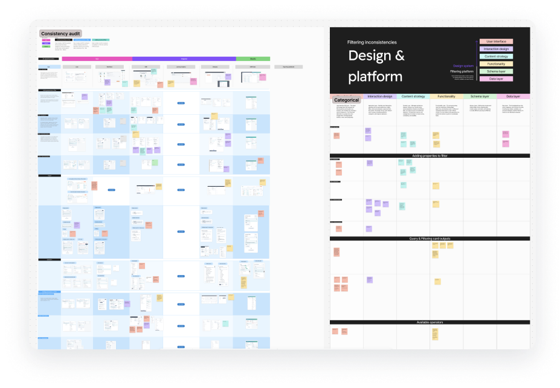
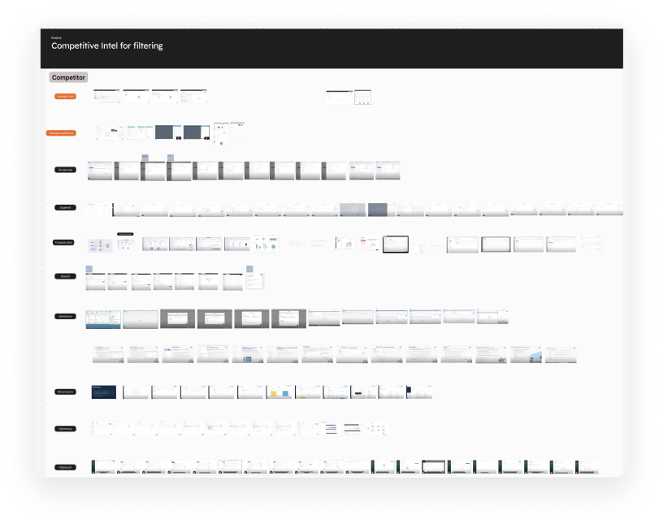
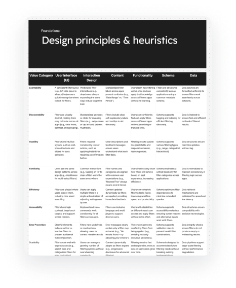
Filtering serves a wide range of users, from RevOps and sales reps to marketers and business analysts, with very different technical levels and data literacy. Some were scared to even open the filter panel. Others asked for complex queries the platform couldn't support. Progressive disclosure is key.
We assumed each tool served a different persona with different filtering needs. Research showed the opposite: users' filtering needs were far more alike than different across tools. For example, sales reps on the CRM index often needed the same cross-object filtering as marketers in Segments. Filtering limits pushed users to the wrong tool and caused confusion and frustration.
“It makes it easier to work in different areas of HubSpot when you don't have to consider that certain things have limitations to them versus other tools within the platform. But for some reason you decided to artificially limit the functionality for this particular part of the platform.”
Sales operations manager
Each team wanted a “simpler” filter for their everyday cases, plus the advanced capabilities their app specifically needed. As a platform team, my tech lead wanted one filter editor everywhere that exposed nearly everything the query could do. I needed to set a direction our team could all stand behind.
I reframed the goal: consistency is a means, not the goal. The goal is successful task completion in each app. I defined consistency as a learnable pattern, not identical UI, so small variants could live within one shared model. Then I let user research draw the line between the shared baseline and app-specific capabilities.
These became the team's design principles. We stopped re-litigating each feature, design conversations got faster, and we converged on a phase 1 solution quickly.
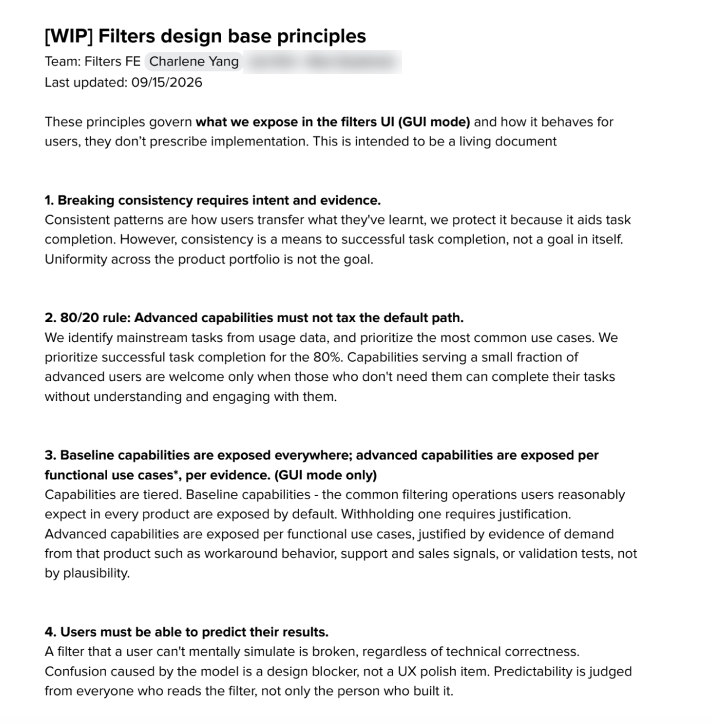
What we built
Before
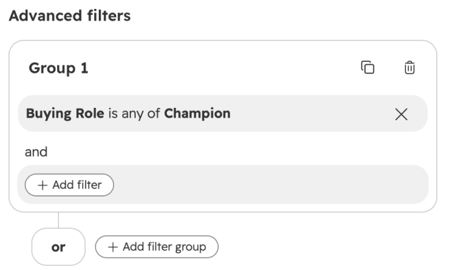
After
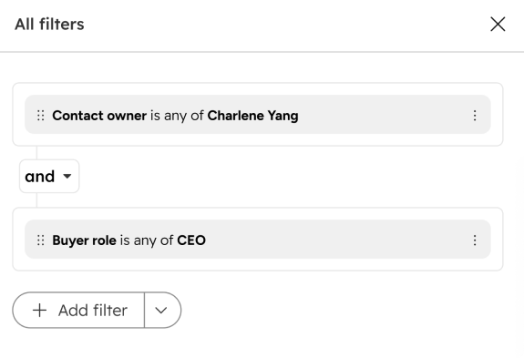
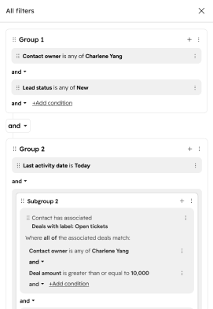
Restructuring a filter shouldn't mean rebuilding it. Users can drag a condition into or out of a group, drop one condition onto another to create a group, or turn any condition into a group from its menu.
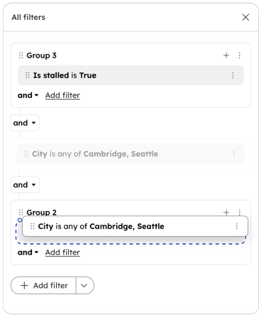
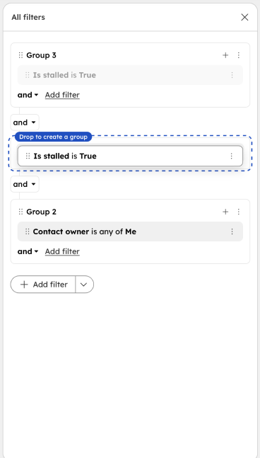
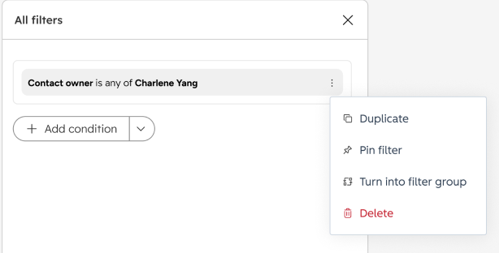
Each product filters on different data. A segment starts from a primary object and can reach into its events, memberships and associated objects. A workflow pulls from its trigger and from earlier actions. The data panel uses one structure that can hold all of them.
Segment
Workflow
Filtering on associated records and filtering on events looked like two different problems, and each product had solved them differently. Underneath, they ask the same questions, so they share one pattern.
| Pattern | Associated objects | Linked events |
|---|---|---|
| Existence | Has / has no associated deal | Has done / has not done Opened email |
| Quantity | Number of associated deals is at least 3 | Opened email at least 3 times |
| Attribute | Any (or all) associated deals where amount > $1,000 | Opened email where campaign is Spring Sale |
| Aggregation | Total deal amount > $50,000 | Total purchase amount > $500 |
| Which one | First / most recently associated deal | First / most recent email opened event |
| Scoped by | Association label (e.g. Primary) | Time window (e.g. last 30 days) |
Long, overlapping operator lists were one of the top usability complaints. Instead of an operator for every case, the choices move into the value: a property comparison mode lets users compare against another property, and a new date picker handles relative and fixed dates in one place.
Property comparison mode
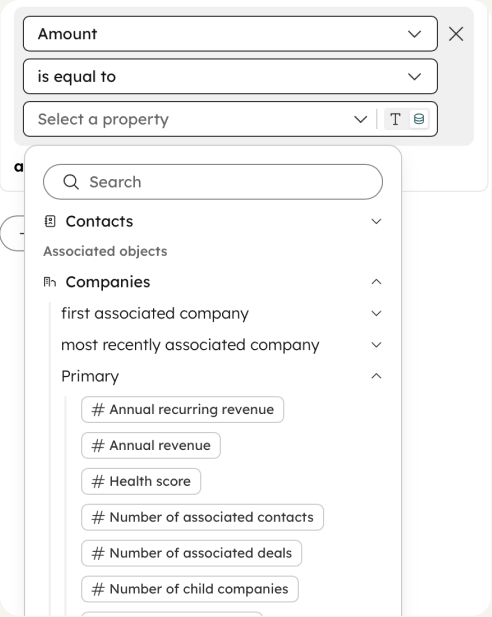
New date picker
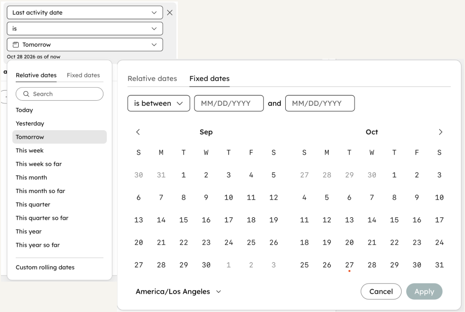
Before
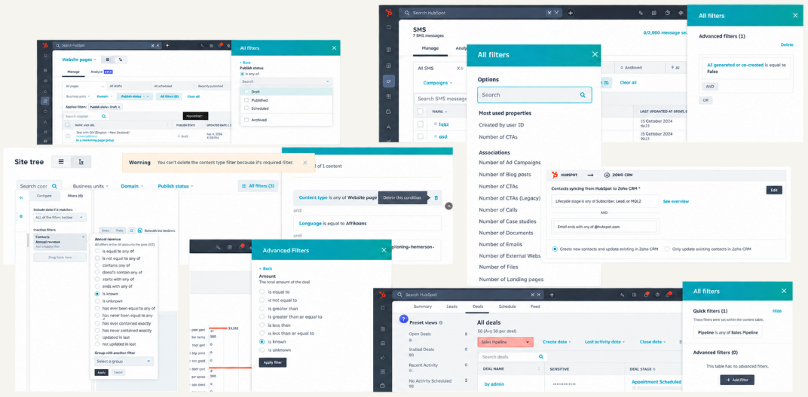
After
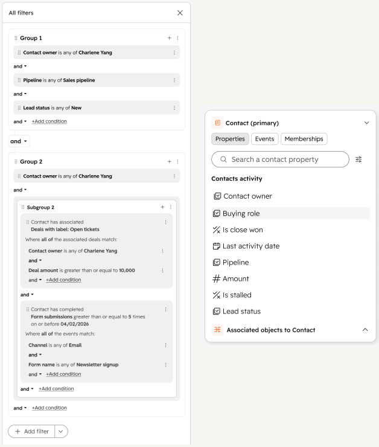
Thousands of requests to join the beta in one week, and lots of positive customer feedback.
Segments and Workflows committed to the migration on their roadmaps.
Recognized by HubSpot's co-founder and CTO.
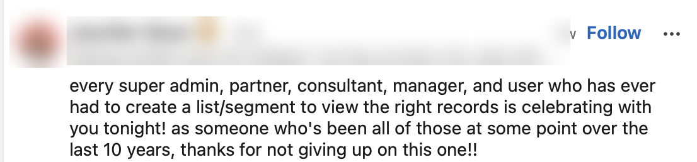
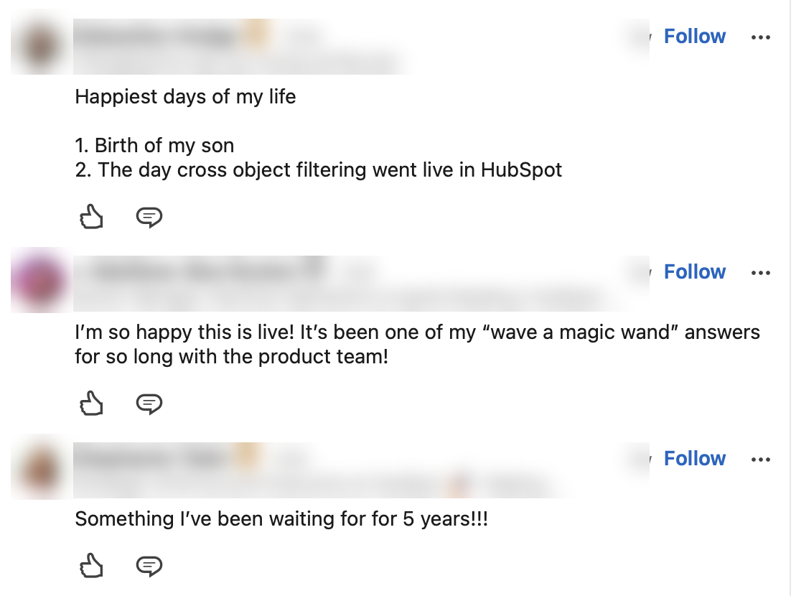
With no dedicated PM for most of the project, the biggest risk was no decision at all. My tech lead and I stepped in to fill the gap. I learned to set the direction early, ground it in research, and let others push on it. We debated almost every decision, and that push and pull is how we got to a design that's intuitive and scales to complex use cases.
Every filter is a query underneath. Understanding how the query works showed me where different requests were really the same need, and where the UI had to expose real complexity.
Two directions are in progress: natural language combined with manual filtering, and subquery support.
×2
Swap a literal value for a data token, and every combination doubles.